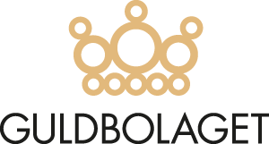
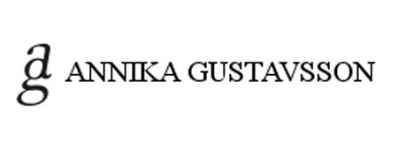
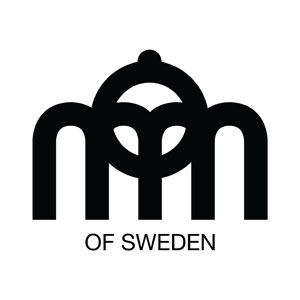
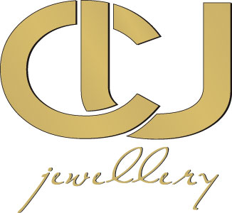
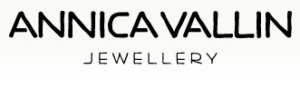
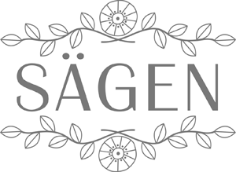

Vår leverantör av småländska ringar. Proffs på förlovningsringar och vigselringar.
Varumärken

Guldbolaget
Sofie by Sofie
Lekfulla smycken skapade av Sophie Gyllenhammar.

Annika Gustavsson
Annika Gustavsson är designer och guldsmed från Gotland.Hon tillverkar exklusivt handgjorda smycken med inspiration från den gotländska naturen.

MOM of Sweden
Smycken from MOM of Sweden har alla ett budskap och talar för sig själva. De är för alla oss som älskar uttrycksfulla, modiga och tidlösa smycken.
MOM of Sweden´s filosofi är enkel: Vi designar smycken som vi själva vill bära!

C U /see-you
1. Vårt sätt att förverkliga våra drömmar.
2. Hållbara smycken till varje tillfälle..
3. Vackra, ädla metaller för att passa det skandinaviska livet.
4. Två vänner och en Björn.
5. Vi tänker, vi ritar, vi dricker kaffe och vi skapar.
6. Det finns designers och det finns konstnärer, men vi har inga fina titlar, vi skapar bara smycken som vi tror på och saknar.
7. Det finns många kollegor som är duktiga på vad de gör, men för oss saknades det något
8. C U

Annica Vallin
Annica Vallin är vår leverantör från Fiskebäck utanför Göteborg. Stilrena och klassiska smycken med en modern twist som passar bra till det skandinaviska modets rena linjer.

Sägen
Sägen är historien om övergivna porslinsskatter och minnen. Svenska smyckesdesignern Elin Sigrén skapar en glänsande mix av det förflutna och framtiden, genom att kombinera det konstnärliga arvet från återvunnet porslin och vintagedetaljer med nutida, skandinavisk design.
Sägen
Sägen är historien om övergivna porslinsskatter och minnen. Svenska smyckesdesignern Elin Sigrén skapar en glänsande mix av det förflutna och framtiden, genom att kombinera det konstnärliga arvet från återvunnet porslin och vintagedetaljer med nutida, skandinavisk design.